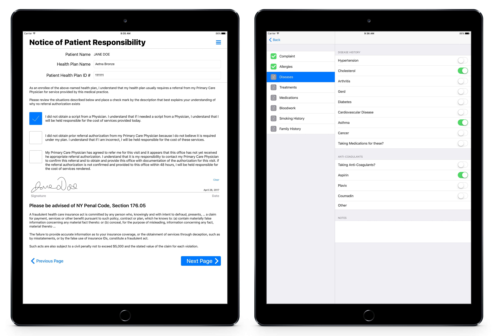
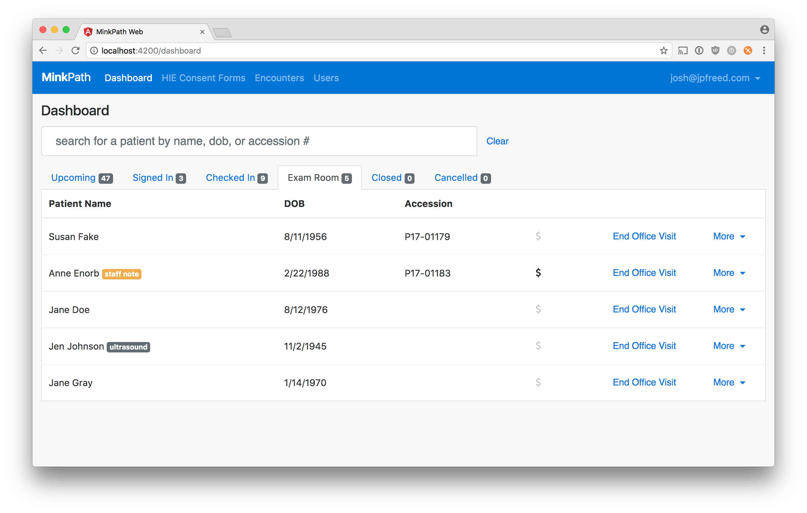

<section id="project-info">
  <div class="container">

    <div class="row">
      <div class="five columns">
        <a href="../images/portfolio/minkowitz-pathology/minkpath-ipad.jpg" target="_blank">
          
        </a>

        <a href="../images/portfolio/minkowitz-pathology/web-screen1.png" target="_blank">
          
        </a>
      </div>

      <div class="seven columns">
        <h2>Minkowitz Pathology</h2>
        <p>
          A pathology practice in Brooklyn, NY. I built an iPad application for patient check-in forms and exam room information
          as well as a web application that serves as a dashboard for employees to manage daily encounters.
        </p>

        <ul>
          <li>Patients use an iPad to fill out check-in forms in the waiting room</li>
          <li>Captures patient signatures</li>
          <li>Physicians and assistants record patient medical history on an iPad in the exam room</li>
          <li>Physicians use an iPad pro to draw diagrams and notes on encounter worksheets</li>
          <li>The front desk tracks patient status on the web application dashboard</li>
          <li>Generate PDFs of packets and worksheets created on an iPad</li>
          <li>Back office uploads the final copy of PDFs into external systems</li>
          <li>Integrates with their existing electronic health record software to gather patient info</li>
          <li>Generate HIE consent forms for submission to NYU</li>
          <li>HIPAA Compliant</li>
        </ul>
      </div>
    </div>

  </div>
</section>
